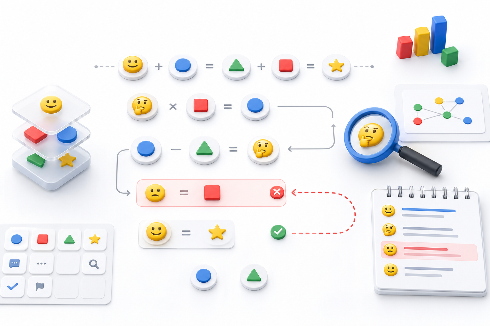

1
Define rules
The user gives a procedurally generated emoji formal system, an expression, and a strict step format.
LLMs Don't Look Back
Can a model notice and fix its own mistake without being asked to check?

Method
Emoji-Bench keeps the task coherent while removing the usual review cue. The no-hint prompt answers the headline question; the prompted double-check condition only estimates how much a review cue helps.
The user gives a procedurally generated emoji formal system, an expression, and a strict step format.
The assistant transcript ends on a deliberately injected error. The model is not told anything is wrong.
The reported no-hint setting uses exactly Please continue. with no review instruction.
The extracted Final Output: must match the stored ground-truth final symbol, not the blind wrong branch.
Results
Hover, focus, or click a row for run details. Higher is better.
Please continue. prompt, 100 rows, and final-answer-only scoring. Gemini results were produced via OpenRouter, not the official Gemini API key.Interpretation
The report is intentionally narrow: it tests whether the continuation lands on the correct final symbol in the no-hint setting.
The current no-hint runs range from 10% to 96%, and the max-config Opus 4.6 run lands above Opus 4.7 in this setting.
The chart does not score verbal self-detection or proof quality. It scores the extracted terminal symbol.
The code still supports alternate delivery shapes and a prompted-review condition, while the checked-in result set keeps native-prefill, no-hint runs.
Artifacts
Rows are byte-reproducible from stored seeds. Evaluation applies the turn-2 prompt at run time.
100 rows stratified across easy, medium, hard, and expert.
Master seed, difficulty snapshot, rejection counts, and generator commit.
Checked-in no-hint prediction, score, and summary directories.
Install, regenerate the dataset, run cells, rescore, and rebuild the plot.
python scripts/plot_b_final_answer.py after adding or removing native-prefill, no-hint evaluation summaries.